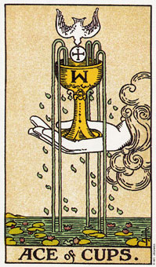

圣杯王牌意味情感的连接和满足。
圣杯王牌代表一个开始。当牌局中出现王牌时，暗示生活当中存在着快乐、爱和喜悦的机会。它可能意味着你正要进入情感满足的一段时期。
这张牌上面的白鸽和圣餐代表心灵上的基础，这基础赋予情感机会真正的意义。如果没有这个心灵上的基础，情感的满足无法包含与你的灵魂，或你生命的贺信中，而原本可能成为持久的满足的东西则变成仅只是一些新奇之物而已。
王牌不只意味一个情感满足的时间，也是持续你心灵发展的一个机会……透过爱，这个最令人振奋、有用的方式。牌中的手从云(心灵)中伸出，握着一个圣杯，水自其中溢出，流进了一方池塘这象征情感满足的来源是心灵，而且当你与心灵越加投契时，你就能享受更多的爱以及比你所与其更丰盛的感情。当心灵在我们生活的许多瞬间契合了，即使是一些小小的事情也能让你充满喜悦，像是一个阳光灿烂的日子、一朵孤零的小花、一抹婴儿的微笑，或是看见一只小昆虫在卷曲的叶子当中建造家园。而当你失去这种契合时，你会在挑战中寻求满足。
当我走笔至此时，我儿子正坐在我后面的地板上，置身于他的玩具中。他太小了还不会说话，但是他的笑容简直胜过所有言语所能表达的。他的笑容发自内心，并直达我内心深处，让我充满喜悦。我看到了最纯洁的爱，我体验到圣杯王牌的意义。我知道这份爱是纯洁的，我感动的想哭。一个微笑这单纯的动作竟使我变的谦卑。
大体上的意义
圣杯王牌代表某种感情的开始。相对于权张王牌所代表的肉体上、体力上的开始，它暗示你已打开心扉接受新机会。它可能是一段新的两性关系，或既存关系的新阶段，例如，一个更深刻的承诺、婴儿的诞生，或一种新层次的满足。此时正是你感觉情感满足的时刻。王牌描述的是透过感情和生活产生连接。你可能正经验着正立王牌的满足感或满意感。或许你正展开一项你全心期待的计划，或是一次旅行。
两性关系上的意义
在两性关系的算法中，圣杯王牌确实是一张相当积极的牌。它可能是在暗示你两性关系当众的某个人正在帮助你和你的心灵目标连接。这段关系正提醒你心灵的泉源，并以爱将你和那泉源连结起来。王牌也可能意指一段新关系，或一段既存关系中的新阶段。
倒立的圣杯王牌
当这张牌倒立时，牌上面画的手就不能握住杯子了，而杯内也装不住任何东西，上面的鸽子也找不到入口进来，那么它就无法带来心灵上的祝福了。
当王牌倒立时，杯内的东西就会泻出来，意味情感和心灵上的空虚。它可能暗示不快了是因为某种情感破裂的状况。为了克服这种状况，你需要发展出内在的和平和宁静。没有了这种和平，你的情感可能会遮住你对生活的视野，或是限制了你的成长和发展。
王牌倒立意味你已经和心灵目标失去连结，失去这份连结，你将逐渐在情感上、创造力上以及肉体上越来越感到饥渴。你须观照内心寻找爱的泉源，而且从对人生的期望中解放自己。这张牌可能意味你与生活以及心灵之路脱节，所以你才会无法辨识生活所提供给你的各种机会。花些时间深思你真正的目的，可帮助你重获清晰的远景。
王牌倒立可能还意味着你无法包容生活所提供给你的情感上的机会。或许你认为你正在做的那些不必要的事远比心灵上的价值还更重要。例如，当我坐在这里打字时，我感到困厄。当我看到我身后那小宝贝时，我为我的紧张严肃哑然失笑，因为我看见了心灵的能量透过肉体的形式呈现出来。他在最简单的事情当中发现欢乐，而我却在复杂而结构化的世界当中失去快乐。